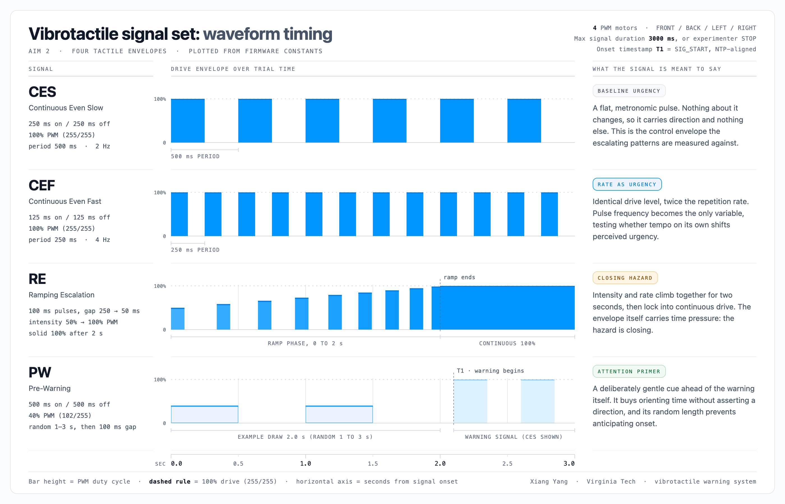
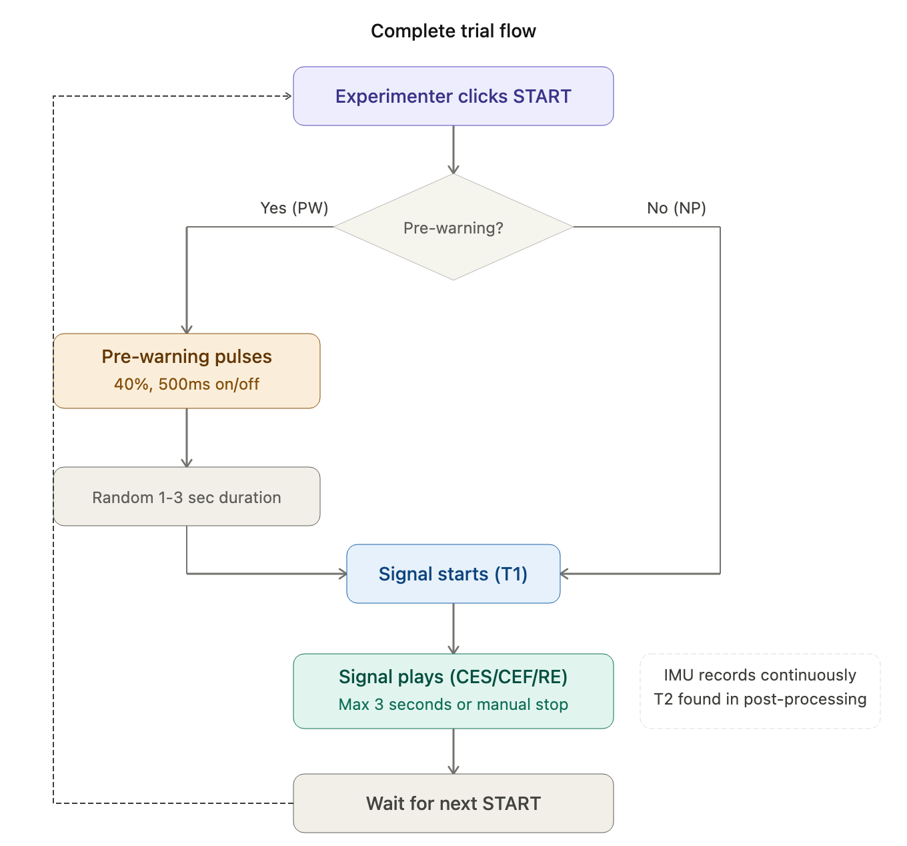
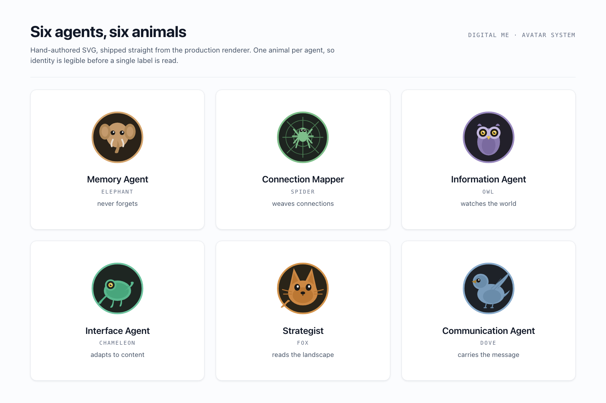
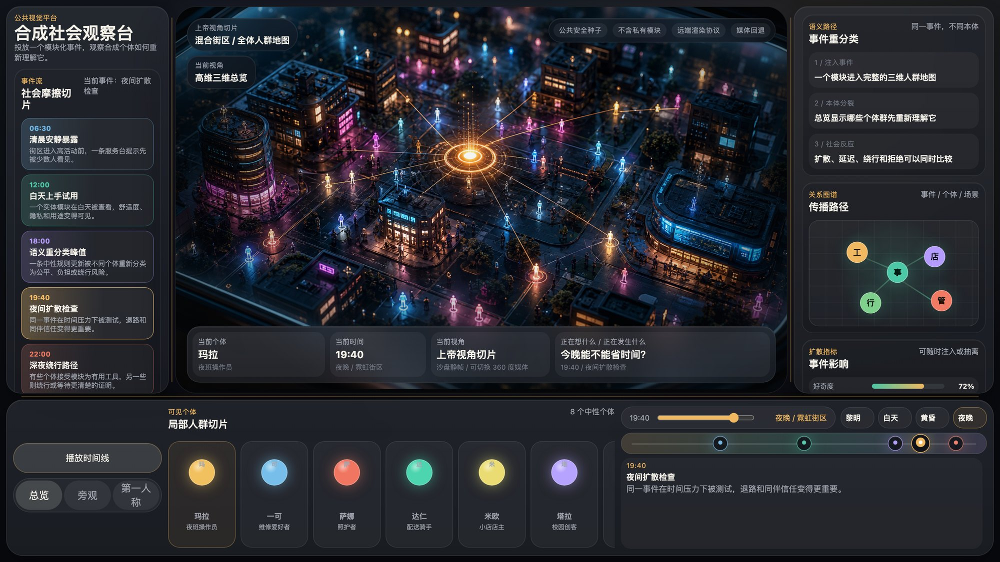
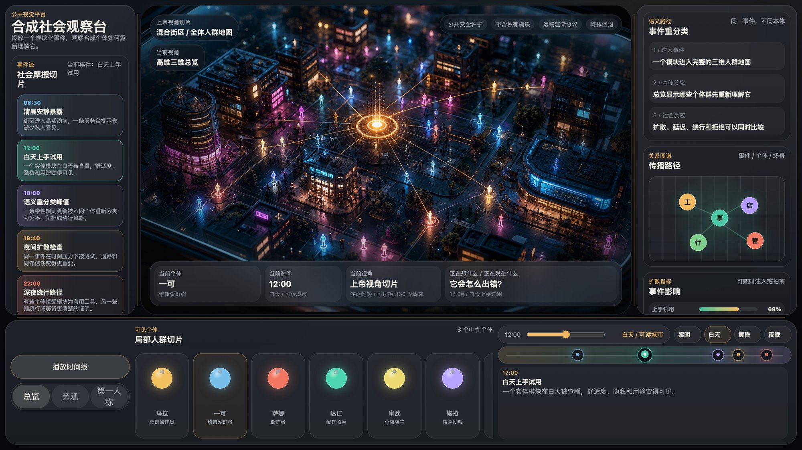
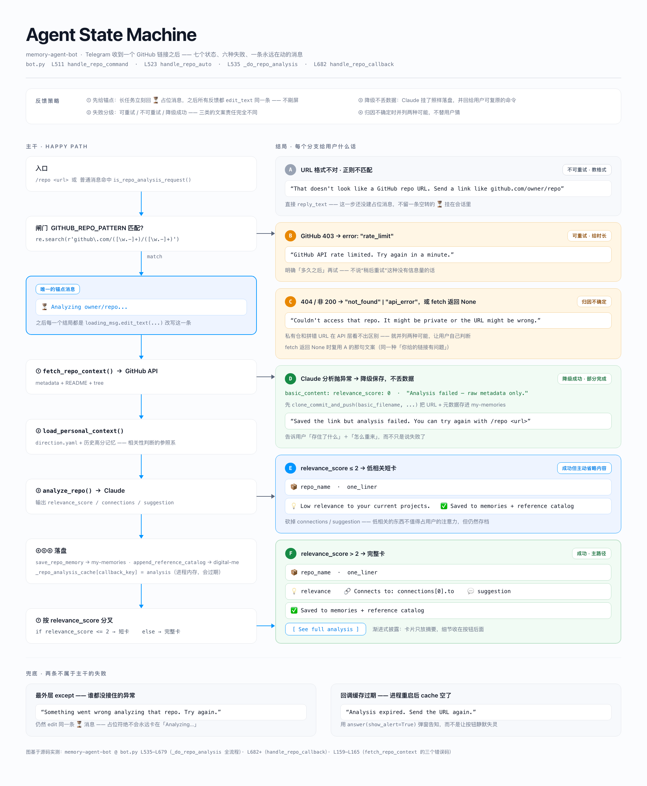
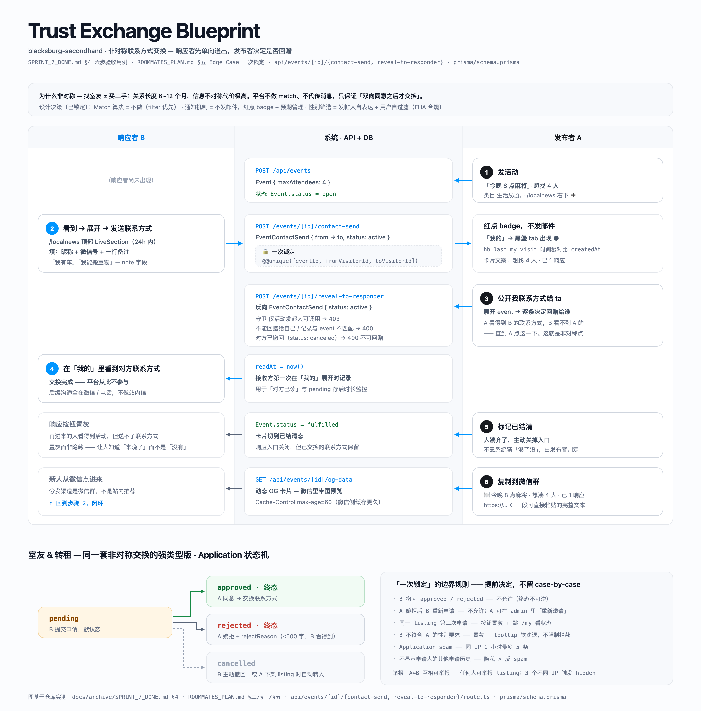
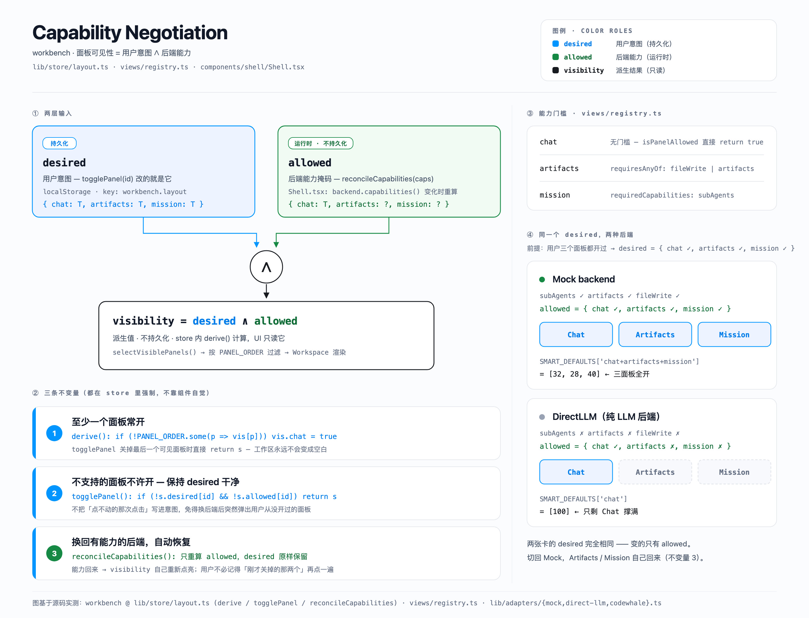

给皮肤设计一套不用学的警示语言A warning language for the skin, with nothing to learn
视觉被占满、环境嘈杂时，信息该走哪个通道？我在头部与躯干上搭了分布式触觉阵列，把“这个提醒够不够明显”变成个体化的感知阈值与反应延迟指标，并证明多部位协同的动态信号比传统静态信号在反应速度和警示准确率上提升 15%。 When vision is saturated and the environment is loud, which channel should information take? I built a distributed haptic array across the head and torso, turned “is this alert noticeable enough” into per-person perception thresholds and response latencies, and showed that coordinated dynamic signals beat conventional static ones by 15% on response speed and accuracy.


［硬件原型实拍 ——
头盔／背心触觉阵列、ESP32 台架］[Hardware prototype photo —
helmet / vest haptic array, ESP32 rig]

警示系统最大的敌人不是感知不到，是狼来了The enemy of an alert system is not weak signal. It is crying wolf.
智慧工地安全平台。工人对灯光与声音警示已经全面脱敏 —— 不是听不见，是不再相信。我们蹲现场做人因调研，重构了报警阈值与多模态通道分配逻辑，让“响 = 真有事”，接受度与留存跟着回来。项目获全美 Top 20 建筑商 Allan Myers 投资。 A construction-site safety platform. Workers had gone fully numb to light and sound alerts. Not because they could not perceive them, but because they no longer believed them. We ran on-site human-factors research, rebuilt the alert thresholds and the multimodal channel allocation so that an alarm again meant something real, and acceptance and retention followed. The project was funded by Allan Myers, a top-20 US builder.
- 单一阈值全场通用 —— 距离一到就报，不分作业类型与噪声环境。One threshold everywhere. Fire on proximity alone, regardless of task type or ambient noise.
- 所有等级用同一种表达 —— 灯光加蜂鸣，紧急和例行长得一模一样。Every severity looks identical. Light plus buzzer, whether it is an emergency or a routine notice.
- 误报没有代价 —— 系统不知道自己错了，也没人反馈。False alarms cost nothing. The system never learns it was wrong, and no one tells it.
- 分级 + 场景化阈值 —— 按作业类型与环境噪声动态调整触发条件。Tiered, context-aware thresholds. Trigger conditions adapt to task type and ambient noise.
- 通道按紧急度分配 —— 紧急：多模态齐上；次要：单通道；例行：静默入日志，不打断人。Channels allocated by urgency. Critical: all modalities. Secondary: one channel. Routine: silent logging that never interrupts.
- 误报进入回路 —— 工人一键标记误报，阈值按真实反馈校准。False alarms enter the loop. Workers flag them in one tap, and thresholds recalibrate on real feedback.
［平台界面截图 —— 移动端感知 + Web 决策台］[Platform screens: mobile sensing + web decision dashboard]
角色感不是起个名字，是每个状态下的行为都自洽Character is not a name. It is behaving consistently in every state.
我独立搭建并部署了一套个人 AI 系统，七个智能体各有人格 —— 大象记忆、狐狸策略、猫头鹰情报、章鱼学习。人格不停在头像上，它落在可读可改的自然语言行为契约里：什么时候说话、什么时候闭嘴、失败了怎么表现。系统在生产环境跑了半年。 I built and deployed a personal AI system on my own. Seven agents, each with a character: elephant for memory, fox for strategy, owl for intelligence, octopus for learning. The character does not stop at the avatar. It lives in readable, editable natural-language behavior contracts that say when to speak, when to stay quiet, and how to behave on failure. The system has run in production for six months.
# strategist / instruction.yaml — 行为边界节选behavioral boundary, excerpt judgment: boundaries: - 建议，绝不代为决定suggests, never commands - 检测到沉默期时不主动发起对话stays silent during detected quiet periods - 不确定时说出不确定，而不是补一个像样的答案states uncertainty instead of manufacturing a plausible answer

一个新硬件进入生活时，会被怎么误解？When a new device enters someone's life, how will it be misread?
把“新模块被用户接纳还是误解”做成可模拟、可观察的沙盘：八个虚拟个体各有自己的需要、解读方式和核心疑问；同一个模块注入后，他们把它重新分类成不同的东西。视角、个体、时相、事件四个维度联动 —— 比问卷便宜，比上线安全。 A sandbox that makes "will this module be adopted or misunderstood" simulable and observable. Eight synthetic individuals, each with their own needs, interpretive frame, and central question. Inject the same module and they reclassify it into different things. Viewpoint, individual, time-of-day, and event interlock across four dimensions. Cheaper than a survey, safer than shipping.


状态机、服务蓝图、失败反馈策略State machines, service blueprints, failure-feedback strategy
体验方案要能被研发、测试、市场读懂并执行，这一节是我日常产出的这类文档。点开看大图。 An experience spec has to be legible and executable for engineering, QA, and marketing alike. These are the documents I produce for that. Click to enlarge.


